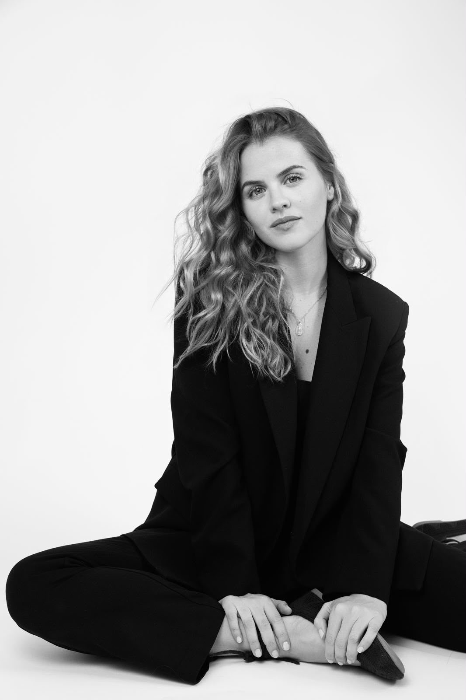

Sábado · 14 noviembre 2026
ConciertoConcierto en la Catedral de Jaén
Misa barroca
Proyecto Maestros de Capilla de la Catedral de Sevilla · Dirigido por Israel Moreno
Catedral de Jaén
Foto: Javi.cavi · Wikimedia Commons · CC BY-SA 4.0La voz, un camino para contar historias y emocionar.
«La música me hace sentir viva, plena y al servicio.»
Belén Quirós es una soprano española nacida en Sevilla. Su recorrido reúne la ópera, la zarzuela, el lied y la música sinfónica y sacra. Desde sus primeros estudios de piano hasta su formación especializada en canto y lied, ha construido una trayectoria guiada por la curiosidad, la sensibilidad y el deseo de comunicar.
Su prioridad artística se nutre de una disciplina diaria basada en el cuidado holístico del cuerpo, la mente y el espíritu. El entrenamiento corporal y deportivo forma parte esencial de su evolución como cantante, alineándose con la filosofía de figuras internacionales de la lírica como Lisette Oropesa, Deanna Breiwick, Erin Morley o Julie Fuchs. Paralelamente, comparte este enfoque integral a través de su colaboración docente online con la Universidad Internacional de La Rioja (UNIR), donde divulga la importancia del equilibrio físico y mental para la longevidad y salud de la voz.
Leer biografía completa →

Comenzó sus estudios de piano a los siete años y en 2011 orientó su formación hacia el canto lírico. Se tituló en el Conservatorio Superior de Música Manuel Castillo de Sevilla, donde estudió con Rosa M. de Alba y Francisco M. Soriano. Posteriormente cursó el Máster Oficial de Lied Victoria de los Ángeles en la Escola Superior de Música de Catalunya (ESMUC), junto a Francisco Poyato y Assumpta Mateu. Ha ampliado su formación vocal y estilística con intérpretes y docentes como la soprano Raquel Lojendio, Carlos Aragón, Anna M. Ollet y Rubén Fernández-Aguirre.
En el ámbito sinfónico y sacro desarrolla una intensa actividad como solista y colabora habitualmente con la Orquesta Sinfónica Hispalense. Su repertorio incluye obras como la Pasión según san Mateo y el Magnificat de J. S. Bach; el Réquiem y la Misa de la Coronación de W. A. Mozart; El Mesías de G. F. Händel; el Stabat Mater de G. B. Pergolesi; el Stabat Mater de J. Haydn, y el Réquiem de G. Fauré.
En el ámbito operístico y escénico inició su andadura en 2021 con la ópera estudio de Le Cinesi, de Manuel García, en la Sala Manuel García, dentro de una producción de la Fundación Juan March. Ha sido recientemente becada por la Berlin Opera Academy (BOA) durante el verano de 2026. En Alte Münze, en Berlín, junto al director alemán Carlos Spierer, interpretó los papeles de Suor Genovieffa y Novizia en Suor Angelica, de G. Puccini, y preparó el papel de Morgana en Alcina, de G. F. Händel. Ha participado también en un estudio de ópera dedicado a Lucia di Lammermoor, de G. Donizetti, en Barcelona, y colabora regularmente con el Coro de la Asociación de Amigos del Teatro de la Maestranza de Sevilla.
Tras ser premiada en el Concurso Menorca Lírica 2025, en el verano de 2026 ofreció un recital junto al pianista Rubén Fernández-Aguirre. Compagina su actividad artística con la docencia en la Universidad Internacional de La Rioja (UNIR) y, desde 2024, colabora con el área educativa de Grandes Oyentes.
Morgana · Cleopatra · Dalinda · Reina de la Noche · Despina · Zerlina · Nannetta · Adina · Marie · Lucia · Oscar · Corinna · Fiordiligi · Contessa di Folleville · Elena
Granados · Guridi · Lorca · Schubert · Schumann · Brahms · Strauss · Mendelssohn · Quilter · Purcell · Barber · Hahn · Fauré · Duparc · Satie · Delibes · Bizet
Bach · Vivaldi · Händel · Pergolesi · Scarlatti · Porpora · Haydn · Mozart · Fauré · Saint-Saëns
Zarzuela, ópera, canción española y música sacra. Descubre una selección de interpretaciones en vídeo.
Visitar YouTube →Me llaman la primorosa · Der Hölle Rache · Olas gigantes · Tornami a vagheggiar · Ave Maria
Ópera, zarzuela, conciertos sinfónicos y de cámara. Recitales privados con piano o guitarra y propuestas para eventos singulares.